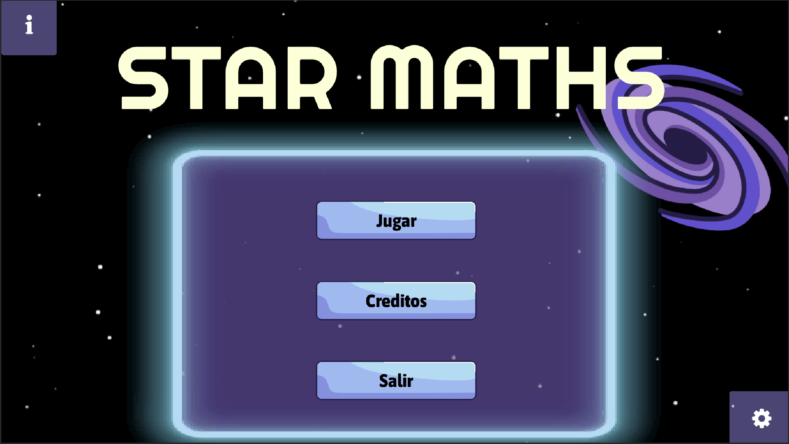

¡Bienvenidos al portal de StarMaths! Aquí podrán encontrar tanto información sobre el videojuego, como las estadísticas de juego.
StarMaths es un videojuego desarrollado por estudiantes del Tecnológico de Monterrey con el objetivo de enseñar y reforzar las habilidades matemáticas de estudiantes que enfrentan una dificultad para aprenderlas. El juego combina un enfoque divertido con un juego de tipo arcade para lograr captar el inerés de los niños.
